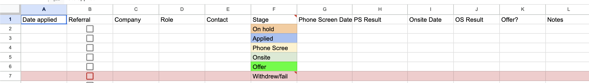
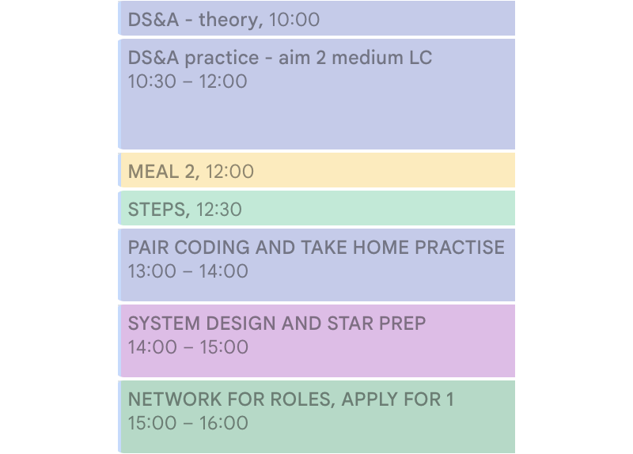
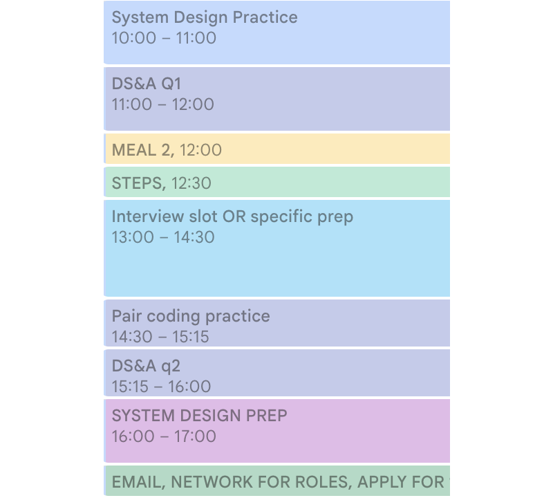
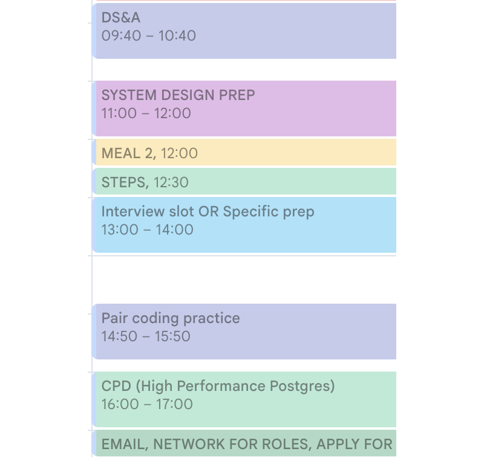

Written up after a request from the LRUG mailing list, this is based on a talk I gave at the London Ruby User Group at Carwow in February 2026.
I spent a lot of time researching what to do, and I know a lot of the community are going through it at the moment, so I’m going to share how to manage a job search and interview prep so you can just skip right to execution.
There are three parts to this: the first is practical, the second is organisational and the third is actually doing the prep and interviews themselves. I will also briefly touch on the importance of being ready to interview even if you are happy and not looking right now.
Your own personal situation shapes how you structure your search. The sequel to Cracking the Coding Interview, Beyond the Coding Interview, has come out recently. It points out that sourcing jobs and talking to recruiters can ironically be very different, and a very different mindset to the actual prep. So it basically says that your prep may suffer if you’re doing recruiter chats and outreach at the same time. The best case, they advise, is if you have “6 months of personal runway” (!) then to minimise overlap between the two. In my opinion even if you can delay, you don’t want to risk putting yourself in an even worse market. So my recommendation would be block time differently, so that you do the outreach and interviews at the same time but not the same times of day. I will come back to this in the section about organizing your time.
The other thing I’d advise is you narrow down what you want from your next role, so for example you might say “UK/EU companies with a good engineering culture and an interesting product”. This will be helpful when talking to friends about your search.
I would advise you contact people you know and be open and willing to let people help you. Also, if you know what you want, when people ask you can give them a cogent answer. People are amazing, and the Ruby community is great. It really helps to reach out to your friends from prior jobs or tech meetups, whether for support or to ask for an intro to anyone who might be hiring.
It is very important to make a schedule - I’ll talk about this later. You want a clean division between managing a job search and executing on it.
One of the first things I did was to find all the meetups I wanted to go to. From these you can get a great deal of support and learning. My personal favourites are LRUG, WNB.rb , London Gophers, Thoughtbot and incident.io events.
Outside of prep it is nice to build something that feels more like real work. So if you have any hobby projects you’ve enjoyed in the past, pick them back up, it will really help. For example I have a Tesco chrome extension that sorts products by price per unit. I logged back into the email I have for it, and there was an email from someone saying it had stopped working, Tesco did another update, so I said cool, I’ll fix it. That felt really nice.
It’s also helpful to think of yourself as a free agent, and therefore think about what you want out of your next role and shape your search accordingly.
In terms of managing, I found a Kaizen or continuous improvement approach useful. Reflect on if your process is working and iterate on it. Beyond the Coding Interview suggests to just cleanly divide your time between managing and execution. So that you’re not constantly shifting what you do day to day. So you shouldn’t just do half an hour of prep, then say to yourself “Oh, this didn’t work, I’ll totally change my schedule, and I’ll take 5 hours now to think about my schedule” - that’s a waste of time.
Don’t forget to try and do your hobbies, so you show up at your next role refreshed!
Document your accomplishments. Focus on writing and not formatting. Get the material from performance reviews or PR descriptions.
I used Gergely Orosz’ resume template: https://blog.pragmaticengineer.com/the-pragmatic-engineers-resume-template
A good CV point starts with an action word, a great one will quantify what the business impact of the work was. You don’t always know that, but if you can put that in there, please do.
I would advise to write concisely and to avoid LLMs - unless, of course, you have always sounded like an LLM - as they tend to write prose in a fairly detectable way. So I don’t think using them really highlights if you have a genuine interest and investment in a role.
Early on I tailored each CV a lot to each role. Later down the line, I found I had a few types of CV that worked best for different types of role. For example, having a lot of fintech experience, focusing on that made a lot of sense for fintech roles, but not for others.
You can also look at structural edits like reordering. So if a job description highlights something and it’s buried way down in each job, just bring it up to the top.
If your CV does not work, and you don’t get callbacks, change it. I was invited to interview for about 75% of applications from variations of my CV, from a mix of referrals and cold applications.
A recruitment term, but you can do it too.
Put your LinkedIn “Open to” on. RubyOnRemote is excellent, as is the LRUG mailing list.
To find the roles that recruiters are not sending you - this was very effective - I used Andy Croll’s site https://usingrails.com/ . You can filter by country, and then, if you like, you can go on every single company in that country, go on that job site and see if they are or are not hiring, because not every company that is hiring is going to use recruiters.
In this market, apply early. If you can get any information from friends who do or did work there, do. But don’t delay to get that. Because hiring managers are getting thousands of applications and they will not sift through those beyond a certain point. I’ve seen a few stop accepting applications quickly in this market.
You will be applying for a lot of roles, so you want to be organized.
Recruiters use something called an “Applicant tracking system” or ATS to keep track of candidates - you can do the same keep track of what stage you are at with each company. I used the “Applicant Tracking System” from https://github.com/Effective-Immediately/ .

You should save each job description and the CV used for it somewhere for reference at later rounds. Those won’t stay up.
You can probably manage around 10 active applications (from recruiter screen onwards) at the same time.
So finally, let’s think about prep.
You’ve got to organise your time.
Time blocking is a productivity technique to help you execute consistently.
Make a schedule, finish at a sensible time and include time for obligations, exercise or whatever you need to do.
Whenever you usually work best, time block the activities you need to do for your job search. So list out everything else you have to do and fit your prep around that.
Initial recruiter screen prep - similar but not exactly the same as
Behaviourals
System design
Data Structures & Algorithms
Pair coding which is not the same as DS&A
Personal and other obligations e.g. dog walking, exercise
Make time for interviews and different types of prep
I would advise that you reflect and iterate - particularly on timing. Like I said earlier, I would not recommend changing things ad hoc during the day. You have two jobs, one managing your process and the other is actually do it. So you don’t want to constantly switch back into the management mode.
Reflect on what works for you and make changes when you need to. For example, early November this was my schedule:

The next month I felt I wasn’t doing enough prep, because I had too many interviews. So I started putting a specific time block in interviews for, whether they happened or not. Then if they don’t happen, I could do something with that time.

The final iteration I had to do was I kept feeling annoyed that I hadn’t hit my goal, since I had set myself quite lofty targets of numbers of hours. And I wasn’t hitting that number of hours. So I just reduced the number of hours per type of prep. The other problem was I hadn’t built in time for breaks, e.g. 20 minutes between blocks to go for a walk, make tea - small oversights like that. The ordering is going to vary for everybody, this is just based around what I found works for me best:

I mentioned feeling a disconnect between the feeling of doing prep and the feeling of doing learning relevant to your profession, so I joined a WNB.rb book club co-run by Jess Sullivan and Dalma Boros where we go through High Performance Postgres for Rails. I tried to finish my day with prep for this, so ending my day with something that feels like it will be useful, regardless of the situation.
Finally I found it difficult to switch from looking for leads back to prep, so I just moved it to the end of the day.
Be flexible - some days a recruiter gave me availability at a time I hadn’t made free for an interview. You just shift everything around, it’s fine.
These are the rounds you might expect, below I’ll discuss.
These are straightforward to prepare for, all you’re doing is talking about work you’ve done in the past. They are a great opportunity to ask questions. In terms of looking for what you want in a role, this is super important. You can also get a good read on whether you’d want to work with the people who interview you. So ask questions and take notes.
There is a standard way to prepare. The guy who created a prep platform for this, Hello Interview, gave an ordered list based on the skills you need to learn and topics that come up Evan @ Hello Interview’s ordered list . Exponent offers free peer-to-peer interviews, people use Excalidraw.
I would advise using Blind 75, that is a short list of Leetcode problems. You want to write on paper before running your code (per Cracking the Coding Interview). You might get things that aren’t exactly the same as problems you saw, but are adjacent, and the prep will still be helpful. For example I was asked to implement a linked list and then a sorted one and that was fine.
Distinct from DS&A, demonstrate how you would work. My best recommendations are Tom Dalling’s talk: https://www.youtube.com/watch?v=7cyx_88m2CM , the Guardian also has publicly released their exercises so you can use those as mocks: + github.com/guardian/coding-exercises
I would really recommend that you turn off Copilot. Former colleagues have seen candidates attempt to cheat on the call with AI but it was very obvious. You also have to bear in mind you will be asked not to use them in most cases, so it’s just stupid to train with the tools on.
Meta have started doing an additional LLM prompting exam. They are the exception. It’s an emerging area; for example, one company at the very last minute decided not to have a pure coding test and instead asked me to read some code, which is fine, but something that I expect will continue to shift.
Be prepared for your IQ to drop in an interview situation. This does happen to everyone, during one I actually laughed because I could feel the difference between before and after.
There is actually research that a live coding interview mimics the Trier Social Stress Test, particularly in women. Out of curiosity I took the problem set the next day and just worked through it, and I was really happy with my solutions, I liked what I’d done and would honestly rate that code. It’s a weird quirk of the process. And a good reminder to challenge yourself with more difficult problems than you expect to get.
Take home tests are the final possibility. The problem is that the assessment is very subjective. Carwow is a notable exception as at least when I was there the first review was an objective, does the take home submission make automated tests pass.
This is about assessing risk.
Is your work at risk? Pay attention in all hands if you’re not already. People might be honest and just say in all hands meetings that the business is not going well. If not, things to look out for are layoffs in other departments, soft layoffs (for example return to office from a consistent remote working policy), or hiring freezes. In addition, there are things no one can predict - it’s nobody’s fault - so in my opinion it’s better to keep your interviewing skills sharp if you can.
As you’ll have limited time, focus on your weak points, do that prep first. Keep DS&A in particular sharp, ramp up can be tricky. System Design has always felt the most relevant to the real job for me, so that’s a good one to work on. Writing skills are becoming rarer so it doesn’t hurt to hone those.